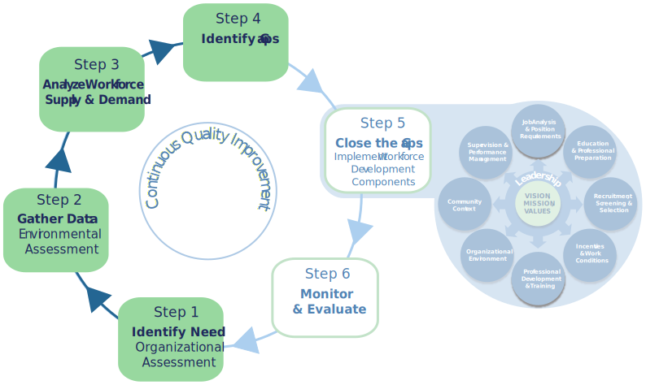

Overview
Let’s Get Started!
Now that you're familiar with how this Tool Kit works, it's time to start using it!
This Planning Process section walks you through Steps 1-4 of the Workforce Development Framework.
The Planning Process
Here's what you need to do:
- Review the Quick Guide to the Planning Process.
This provides a summary of each step.
- Review each of the Steps and their worksheets.
Worksheets help you:
- Gather information about the workforce needs of your agency.
- Scan organizational and environmental (and community) characteristics.
- Analyze workforce supply and demand.
- Identify workforce gaps.
- Download, save, review, and work in your saved worksheet for each Step.
Decide as a team the best way to complete each step.
For example, you may choose to assign specific information-gathering tasks as “homework” to one or more individuals of the team. Then, they can bring their findings back for review and consideration by the entire team.
Make sure to discuss the questions under “Summing it Up” as a team. It ensures that multiple points of view are taken into account. This information will point to current and emerging workforce gaps and provide a Snapshot of your agency.
- Continue on to Explore the Components & Strategies to address identified gaps.
Quick Guide to the Planning Process
This quick guide provides an overview of the four steps in the Planning Process.
It includes the information collected (inputs) and knowledge gained (outputs) by your team during each step.
The Quick Guide2
Identify Need
Information Gathered (Inputs)
- Mission and vision statements
- Core values statement
- Strategic plan, program evaluations or legislative audits
- Newly funded grants, proposals, IV-Waivers
Knowledge Gained (Outputs)
- Relevant information about current programs
- Anticipated changes impacting agency direction
Go to the STEPS
Gather Data

Information Gathered (Inputs)
- Assessment of agency culture & climate
- Job satisfaction, HR exit interviews
- Funding increases & decreases
- Legislative & policy changes
- Characteristics of community & demographics
- Emerging trends in demographics; immigration, net migration into/out of community
Knowledge Gained (Outputs)
- Factors impacting agency culture/climate & staff morale
- Social trends & issues impacting community
- Economic conditions impacting labor pool & workforce
- Industry & generational shifts impacting agency & community
Go to the STEPS
Analyze Workforce Supply & Demand
Information Gathered (Inputs)
Supply
- Workforce levels
- Demographic information
- Hiring & turnover trends
- Newly funded grants, proposals, IV-Waivers
Demand
- Agency program and budget plans
- Analysis of jobs needed
- Analysis of needed skills, knowledge, & competencies
Knowledge Gained (Outputs)
- Relevant information about current programs
- Anticipated changes impacting agency direction
Go to the STEPS
Identify Gaps
Information Gathered (Inputs)
Information Gathered and Summaries of:
- Step 1: Organizational Assessment
- Step 2: Environmental Assessment
- Step 3: Workforce Supply & Demand
Knowledge Gained (Outputs)
- Overall workforce strengths
- Overall workforce challenges & gaps
Go to the STEPS
2Adapted from Cornerstones for Kids. (2006). Workforce planning overview. Washington, DC: CPS Human Resources Services & National Child Welfare Workforce Institute. (2013). A comprehensive workforce strategy to advance child welfare outcomes. Albany, NY: Author.
The Steps in the Planning Process
Now you're ready to review each of the steps in the Workforce Development Planning Process and their worksheets.
Remember to download, review, and complete the worksheet for each step.
After you've finished with each step, continue on to EXPLORE THE COMPONENTS & STRATEGIES to address identified gaps.
Go Through the Steps
Identify Need (Step 1)
Examine in broad terms the overall mission, vision and purpose of your agency. Analyze where your agency is now and into the future. Determine the current and anticipated program direction.
Assemble documents that include relevant information about:
- Current programs
- Anticipated changes
- Current and emerging trends
- Impact on and implications for the workforce
Information may come from multiple sources:
- Reports summarizing recent strategic planning processes
- Internal or external program evaluations or reviews
- Legislative or fiscal audits
Worksheet: Identify Need
STOP Download, save, and work in your saved worksheet!
Gather Data (Step 2)
Scan your agency's internal and external strengths, weaknesses, opportunities, and threats (SWOT).
SWOT:
Using comprehensive, accurate, and reliable information provides essential knowledge about your agency and factors impacting the workforce.
Assemble documents that include relevant information about:
- Information about your agency’s culture and climate gathered through an organizational assessment and/or job satisfaction survey.
- Exit interviews with staff who are leaving the agency.
Learn more: 1-page Summary–Impact of organizational culture and retention
Environmental Assessment:
Include information about:
- Budget conditions and funding levels.
- Economic conditions such as unemployment rates or changes in local industry.
- Statutory or policy changes that will impact the workforce.
- Community Context: social and economic trends, challenges, and community strengths (for example, strong partnerships or economic growth and development).
Demographic Information:
This contributes to a better understanding about the extent to which the workforce is reflective of those served. An awareness also assists to determine how the agency can better meet the needs of the community.
Include information about the community at large:
- Race and ethnicity.
- Immigration patterns and cultures of origin.
- Community Context: social and economic trends, challenges, and community strengths (for example, strong partnerships or economic growth and development).
Note:
- Community members participating on the Workforce Development Team are key partners in identifying and gathering data and completing the SWOT analysis during this step.
- Demographic information about the workforce is more fully explored in Step 3: Analyze Supply and Demand
Worksheet: Gather Data
STOP Download, save, and work in your saved worksheet!
Analyze Workforce Supply & Demand (Step 3)
Perform a supply and demand analysis, informed by the environmental assessment.
This includes:
- Current trends in staff turnover.
- Past and projected rates of retirement and internal vacancies.
- Demographic characteristics and make-up of the staff and labor force in the community (including race, ethnicity, age, gender, language, etc.).
Analyze demand required for the delivery of your organization’s current and future programs and services.
- Future activities (like the implementation of a new practice model).
- Anticipated workload.
- Staff composition (education, knowledge, diverse skills, etc.).
Worksheet: Analyze Workforce
STOP Download, save, and work in your saved worksheet!
Identify Gaps (Step 4)
Where does your agency meet or fall short of the workforce resources needed to fulfill its mission?
You'll find out during this step.
Compare the current workforce to the nature of the work and anticipated future direction and needs. This identifies areas of unmet need in “human capital”–the workforce gaps.
You'll use the information from Steps 1-3 to identify these gaps.
This gap analysis also points out racial or ethnic disparities or underrepresented social identity groups in the workforce.
Worksheet: Identify Gaps
STOP Download, save, and work in your saved worksheet!